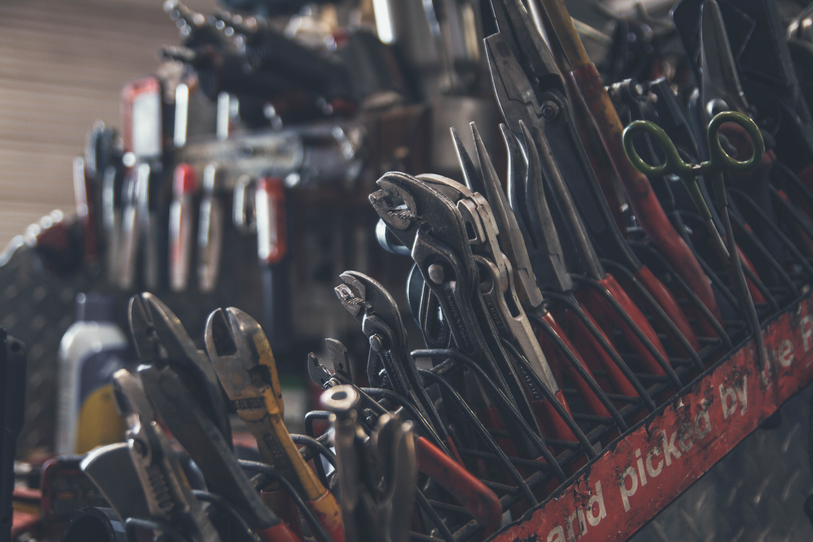
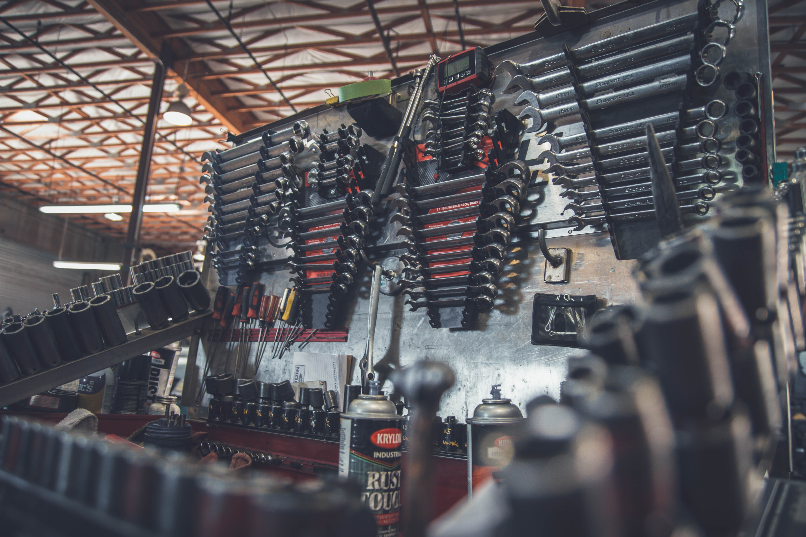

Meistä
Ruosteinen Rauta Oy on perustettu 1958. Myymälästämme löydät erittäin laadukkaita rauta ja
metallialan tarvikkeita sekä palveluita kaikkeen rakentamiseen – oli kyse sitten korjaamisesta,
remontoimisesta tai uuden rakentamisesta suurissa tai pienissä kohteissa. Meillä asiat hoituvat
tutulla ammattitaitoisella tavalla alusta loppuun ja kokeneet ammattilaiset auttavat sinua löytämään
parhaat ratkaisut, rakennusmateriaalit tuotteet sekä koneet ja vuokralaitteet.
Myymälämme valikoimasta saat kaiken yhdellä kertaa suuriin ja pieniin rakennus-, remontointi- ja
sisustusprojekteihin ulos ja sisälle. Yrityksemme arvot ovat kestävän kehitys, osaava ja hyvinvoiva
henkilökunta sekä työturvallisuus.
Oikein rakentaminen onnistuu hyvillä ratkaisuilla - Tervetuloa asioimaan Ruosteiseen
Rautaan!
Ruosteinen Rauta on Porin Yrittäjien jäsenyritys. Tutustu Porin Yrittäjien toimintaan: Porin Yrittäjien
toiminta

Historia
Vuonna 1958 avattiin ensimmäisen kerran Ruosteinen Rauta Oy:n myymälä Porin kauppatorille,
osoitteeseen Pohjoiskauppatori, 28100 Pori. Tässä osoitteessa myymämme toimi aina vuoteen 2020 asti
palvellen ensimmäisenä rautakauppana Porilaisia. Myymälämme on toiminut vuodesta 2020 alkaen
osoitteessa Urheilutie 1, 28500 Pori, jolloin avasimme supermyymälän – joka on yksi pohjoismaiden
suurimpia rauta ja metallialan myymälöitä. Vuonna 2020 laajensimme palveluihimme myös kone ja
laitteistovuokrauksen kaikkeen rakentamiseen.
Yrityksen perustaja Rauno Rauta on palvellut asiakkaita vuodesta 1958 ja vuonna 2022 Tuukka Rauta
jatkaa yrityksen ohjaksissa Reino Raudan jäädessä eläkkeelle. Tuukka Rauta on toiminut yrityksessä
jo vuodesta 2000. Vuonna 2021 yrityksessämme työskenteli 100 alan ammattilaista palvellen
asiakkaitamme rautaisella ammattitaidolla.
Yrityksemme ideana on alusta lähtien tarjota rakennus ja metallialan tuotteita ja palveluita
edulliseen hintaan. Palveluumme on aina kuulunut ammattitaitoinen opastus ja asiantuntemus, jota
asiakkaamme useiden sukupolvien ajan ovat hyödyntäneet projekteissaan. Voimmekin rehellisesti sanoa,
että tunnemme alan läpikotaisin ja tämän pitkän kokemuksen tuomalla varmuudella pystymme tarjoamaan
asiakkaillemme kaikki rauta ja metallialanpalvelut luotettavasti ja laadukkaasti – jo vuodesta 1958.
Palvelut
Rakennustarvikkeet
Ruosteinen Rauta tarjoaa rakennustarvikkeet alan johtavilta merkeiltä nopeasti toimitettuna suoraan työmaalle. Ruosteisen Raudan Rakennustarvikkeet – palvelun avulla rakentaminen on helppoa ja edullista. Laadukkuus ja edullisuus ovat ominaisuuksia, joita ostajat odottavat rakennustarvikkeilta. Rakennustarvikkeet - valikoimasta löytyy paljon vaihtoehtoja pienempiin tai isompiin rakennus- tai remontointiprojekteihin.
• Perustustarvikkeet
• Rakennusmateriaalit
• Sähkötarvikkeet
• Ilmanvaihto
• Lämmitys
• LVI
• Työkalut ja tarvikkeet
Sisustustarvikkeet
Kun talo on rakennettu, voidaan keskittyä sisustamiseen. Me autamme sinua myös kaikissa sisustamiseen liittyvissä ratkaisuissa. Valikoimaamme kuuluu kaikki sisustukseen tarvittavat tuotteet ja ratkaisut, kuten keittiökalusteet, takat, tapetit, lattiapinnoitteet, laatat, koukut ja maalit.
• Keittiö
• Kylpyhuone ja wc
• Laatat | lattialaatat, seinälaatat, kuviolaatat
• Lattiat | parketit, laminaatit, korkkilattiat, vinyylilattiat
• Ovet
• Kiukaat
• Tapetit
• Koukut naulakot ja hyllyt
• Takat
• Valaistus
Piharakennus
Laajasta valikoimastamme löydät kaiken tarvittavan pihan suunnitteluun ja rakentamiseen.
• Pihakivetys ja päällysteet
• Puutarhakalusteet ja tarvikkeet
• Kylpytynnyrit ja uima-altaat
• Pihavalaisimet
Konevuokraus
Vuokraamme laadukkaat ja turvalliset koneet erikokoisiin projekteihin yrityksille, yhteistyökumppaneille ja yksityisille rakentajille ja remontoijille. Varaa ja tilaa tarvitsemasi kone tai laite, kuljetamme koneen kohteeseen sovittuna ajankohtana. Esimerkkejä koneista ja laitteistamme:
• Henkilönostimet
• Nosto- ja siirtokalusto
• Maantiivistyskalusto
• Maansiirtokalusto
• Peräkärryt
• Avant
• Generaattorit